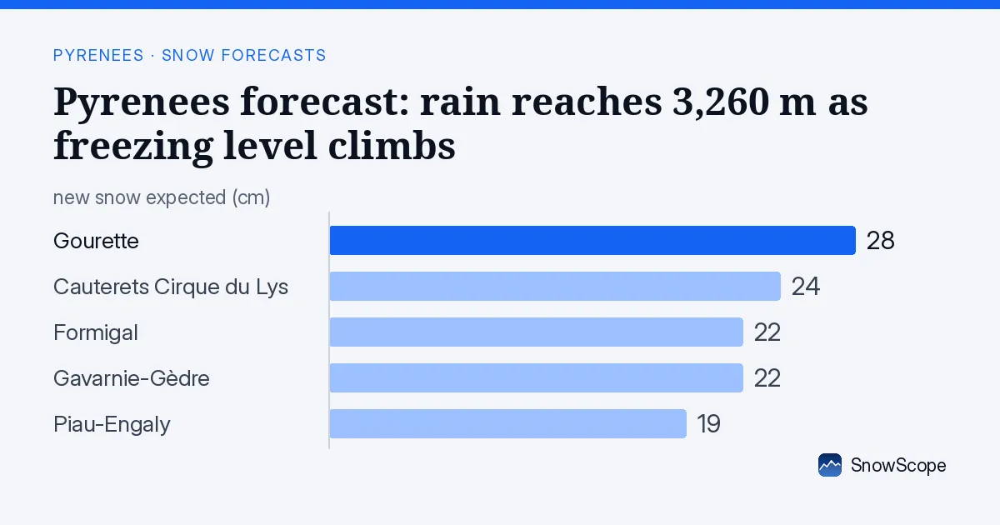
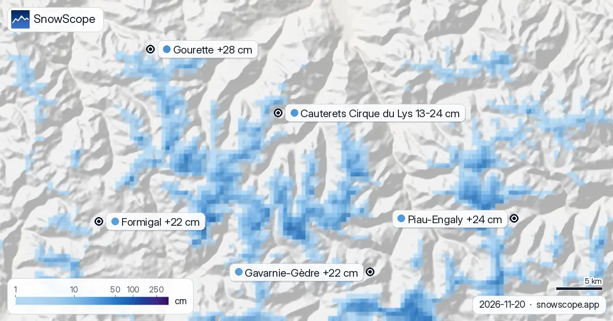

Pyrenees forecast: rain reaches 3,260 m as freezing level climbs
The freezing level will climb above the highest ski lifts in the Pyrenees by Sunday, bringing rain to the summit zones where only snow fell earlier this week. New snow will fall across the mountains over the next three days, but how much snow reaches the ground depends critically on where this rain–snow boundary sits.
See the live snow forecast for Piau-Engaly in the SnowScope appSnow depth, powder alerts and the 3D map, free.
Rain moves into high elevations by Sunday
SnowScope shows the freezing level rising from around 2,400 m on Saturday to 3,260 m by Monday. Cauterets Cirque du Lys, with its lift top at 2,420 m, will see rain rather than snow on Sunday and Monday. This matters: rain on existing snow accelerates melt and can destabilise the snowpack if the layer below is weak.
The sequence matters. Saturday and Sunday morning will bring mostly snow across the range; the warmth arrives on Sunday afternoon and Monday. Piau-Engaly, which sits higher at 2,527 m, may avoid the worst of this rain on Sunday, but the freezing level could still reach 2,800 m by Monday evening.
| Resort | Snow depth | New snow, 72 h | Coming, next days | Top |
|---|---|---|---|---|
| Cauterets Cirque du Lys | 16 cm | 13 cm | 24 cm | 2,420 m |
| Gourette | 16 cm | 11 cm | 28 cm | 2,453 m |
| Piau-Engaly | 35 cm | 15 cm | 19 cm | 2,527 m |
| Formigal | 8 cm | 7 cm | 22 cm | 2,264 m |
| Gavarnie-Gèdre | 3 cm | 4 cm | 22 cm | 2,283 m |

Where new snow will accumulate in the next three days
Between 13 and 24 cm of new snow is forecast across the region by Sunday evening, but the range is wide because of the mixed rain and snow zone. The map below shows where this falls as snow versus sleet.
Gourette stands to gain the most: our estimates 17–28 cm of new snow at the summit over the next three days, with the heaviest falls on Saturday. Cauterets and Piau-Engaly will each see around 13–24 cm and 4–19 cm respectively at their upper slopes. Formigal, on the Spanish side, begins with less base depth (8 cm today) but should collect roughly 14 cm at the top by Sunday evening.
Snow depth by height: the measurement challenge
Our snow estimates current depths at mid-mountain around 2,100 m: near zero almost everywhere.
By Sunday evening, we expect mid-mountain zones (1,900–2,100 m) to hold 9–17 cm of new snow, while the summits accumulate 13–20 cm. But the base areas will see rain, not snow. At Cauterets' base (1,725 m), only 1 cm of precipitation is forecast to fall as snow over seven days; the rest will be rain.
Reliability and the rain–snow line
Forecast uncertainty is higher than usual because the rain–snow boundary will shift around 2,200–2,400 m, the exact zone where many people ski. If the freezing level drops 100 m faster than predicted, more snow survives. If it rises faster, rain eats into the mid-mountain terrain.
Our forecast reliability ranges from 13 to 24 cm at Cauterets' summit; from 17 to 28 cm at Gourette.
Comparison to past winters
The usual depth on this date is 6 cm. This week's fresh snow will bring the total closer to normal, but early-season cover remains thin. Any rocks or bare ground at mid-elevations will not be fully buried by Sunday.
What this means for water storage
Rain falling on thin snow at high altitude accelerates runoff into mountain streams. If the rain–snow line settles near 2,400 m as expected, water will reach rivers and reservoirs more quickly than if the same precipitation had fallen as cold snow. This matters for mountain hydrology: snow persists and feeds gradual melt; rain moves fast. Watch for stream discharge to spike if Sunday's rain arrives as forecast.
Tips for skiers
- Stay above 2,100 m on Saturday and Sunday morning to find the best preserved new snow before the rain–snow transition arrives. Below 2,200 m, expect mixed conditions and sleet from Sunday afternoon onwards.
- Check local avalanche bulletins before heading off-piste, especially on steep terrain where the transition from snow to rain creates instability. Fresh snow settling on a potentially weak early-season base is a known hazard.
- Ski early: the freeze-thaw cycle will begin as soon as Sunday afternoon rain warms the snowpack. First light offers the firmest surface.
- Expect rapid deterioration below 2,000 m by Monday. Rain at altitude means rain almost certainly at the base areas; melt will accelerate.
About these numbers
Resort snow depths are the deepest snow on the resort's upper slopes on the date shown; they are estimates for an area, not a measurement at one point. Forecasts can change. Always read the official avalanche bulletin before going off-piste.
Official avalanche bulletins: Météo-France / Meteocat / AEMET
Cite this report
For research, teaching or the press: the numbers and charts are free to reuse under CC BY 4.0 with this citation.
SnowScope (2026), Pyrenees forecast: rain reaches 3,260 m as freezing level climbs, https://snowscope.app/blog/en/2026/11/pyrenees-piau-engaly-snow-forecast-20-november-2026.html, accessed 2026-11-20
SnowScope (Atlas Labs). (2026, November 20). Pyrenees forecast: rain reaches 3,260 m as freezing level climbs. SnowScope snow reports. https://snowscope.app/blog/en/2026/11/pyrenees-piau-engaly-snow-forecast-20-november-2026.html
BibTeX
@misc{snowscope2026pyreneespiauengalysnowfo,
author = {{SnowScope (Atlas Labs)}},
title = {Pyrenees forecast: rain reaches 3,260 m as freezing level climbs},
year = {2026},
month = nov,
howpublished = {\url{https://snowscope.app/blog/en/2026/11/pyrenees-piau-engaly-snow-forecast-20-november-2026.html}},
note = {Published 2026-11-21 10:43 UTC; accessed 2026-11-20}
}· CC BY 4.0 · Methods, data and tools →
Piau-Engaly: snow and temperature by height, this winter vs last (tools) →
Follow Piau-Engaly
Free: a message when fresh snow is coming, and the forecast every morning.
More snow reports

Three thin winters in a row ended in 2025-26; this autumn has started normally.

Compare Grandvalira and Spanish resorts in December 2026 for snow depths, lift heights, and prices starting from 49.00 EUR.

Grandvalira is often sold as cheap December skiing, yet natural snow at the base averages just 9 cm in past winters.